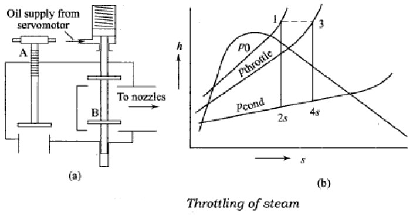
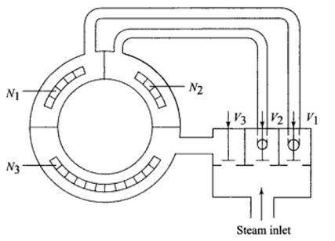

Imagine a perfect world where every bit .diagram-container figcaption {
font-size: 0.9em;
margin-top: 5px;
color: #555;
}
.question-box {
border: 1px dashed #0779e4; padding: 10px; margin: 15px 0;
background-color: #e7f3fe; border-radius: 5px;
}
.question-box p { margin-bottom: 5px; of steam's energy is turned into useful spinning power by the turbine. That's the dream! But in reality, there are "energy gremlins" – or what engineers call **losses** – that reduce the turbine's actual work output and efficiency.
We can think of these losses in two main groups: those happening *inside* the steam's path, and those happening *outside* it.
<="diagram-container">
Where does the energy go? A peek at turbine losses.
Engineering Learning Hub
Ideally, a steam turbine would be a perfect gliding over the blades isn't perfectly smooth; friction steals some energy, turning it into a tiny bit of unwanted heat in the steam.
Secondary Flow Losses: Steam likes to flow straight, but blades make it turn sharply energy converter, turning every bit of steam's available energy into useful spin. But in the real world, little ". This creates complex swirls and eddies (like mini-whirlpools) that waste energy.
Tip Leakage Losses: Especially in reaction turbines, some sneaky steam tries to escape over the tips of the moving blades instead of doing useful work. It's like air leaking from a tiny hole in a balloon.
Disc Friction & Windage: The big metal discs holding the blades spin super fast. They experience friction against the steam around them, like trying to run through water. "Windage" is when blades churn steam that isn't actively flowing through them.energy gremlins" are at work, causing **losses**. These losses mean the actual work we get out is less than the theoretical maximum, and the turbine isn't 100% efficient (shocking, right?).
Self-Question: If losses are inevitable, why do engineers obsess over them?
Answer: Because even a small percentage improvement in efficiency for a giant power plant turbine can save millions in fuel costs and reduce emissions significantly over its lifetime! Every little bit counts.
We can group these losses into two main gangs:
Where Energy Can "Leak Out" in a Turbine
Wetness Loss: The Water Droplet Drag Race! When steam expands and cools too much (especially in low-pressure stages), it starts to form tiny water droplets. These droplets are like microscopic cannonballs hitting the fast-moving blades, acting as a brake and causing wear.
Think: Trying to run through a heavy rain shower – the raindrops slow you down!
Incidence Loss (Shock Loss): If steam hits the blades at the wrong angle (not smoothly "gliding on"), it creates turbulence and "shock," wasting energy. Like a badly aimed billiard shot.
Self-Question: If friction in blades heats the steam slightly, isn't that a good thing? More heat = more energy?
Answer: Not really in this case! While the steam's enthalpy (heat content) might go up a tiny bit due to this frictional reheating, it's an *irreversible* process that increases entropy. This means the *quality* of that energy is degraded, and its ability to do useful work is reduced overall. We want smooth, efficient energy conversion, not chaotic heating!
External Losses: Gremlins Outside the Main Steam Path
Think: A leaky seal on a piston – some pressure escapes without doing work.
Disc Friction and Windage Loss: The big rotor discs spinning in a "sea" of steam experience drag, like stirring thick honey. "Windage" is when blades churn through nearly stagnant steam.
>
Gland Leakage (Shaft Seal Leaks): Steam trying to escape (or air trying to sneak in, in vacuum sections) where the turbine shaft pokes out of the casing. Special seals (labyrinth seals) try to stop this.
Bearing Friction: The massive turbine shaft spins on bearings. There's always some mechanical friction here, turning useful spin into unwanted heat.
Governing Valve Losses (Throttling): When the turbine isn't running at full power, control valves might "throttle" (Wetness Loss: The "Steam Rain" Problem. As steam expands and cools in low-pressure stages, it can form tiny water droplets. These droplets are like mini-bullets hitting the fast-moving blades, acting like a brake and reducing efficiency. They also mess up the smooth flow.
Incidence Loss (Shock Loss): If steam hits the blades at the wrong angle (not smoothly along the blade's leading edge), it's like a bad pass in football – energy is lost due to turbulence and "shock."
External Losses (The energy escapees *outside* the main steam path):
Grestrict) the steam. This pressure drop wastes energy.
Leaving Loss (Exhaust Loss): The "Goodbye" Kinetic Energy. The steam leaving the very last stage of the turbine still has some speed ($V_{exhaust}^2/2$). This kinetic energy just flies off into the condenser (or atmosphere) and is lost. A big tailpipe on a race car makes a lot of noise and shoots out fast exhaust – that's wasted energy!
Radiation & Convection Loss: The turbine casing is hot, so it radiates some heat to the surroundings. Usuallyland Leakage Loss (Shaft Seal Leakage): Steam trying to sneak out (or air trying to sneak in, in condensing turbines) where the turbine shaft pokes out of the casing. Special seals (labyrinth, carbon rings) try to stop this.
Bearing Friction Loss: The shaft spins on bearings, and there's always some mechanical friction, turning useful spin into unwanted heat.
Governing Valve Loss (Throttling Loss): When small if well-insulated.
All these little (and sometimes big) losses add up, meaning the actual power we get is less than what the steam initially promised!
Blade Wars: The Problem of Erosion
Turbine blades are the workhorses, but they can take a beating! **Blade erosion** is when the blade material slowly gets worn away, like a river carving a canyon, but much faster and more destructive.
we control the turbine by "throttling" (partially closing) the main steam valve at part loads, it's like kinking a garden hose – pressure drops wastefully.
Leaving Loss (Exhaust Loss): The steam leaving the last turbine stage still has some speed (kinetic energy). If this isn't recovered, it's just wasted energy going to the condenser.
Think: A rocket still moving fast when its fuel runs out – that remaining speed is like leaving loss.
RadiationOuch! Turbine blades showing signs of erosion, especially on leading edges.
The Culprits: What Causes Blades to Erode?
Water Droplet Erosion (The Tiny Hammer Attack!): This is the main villain, especially in the low-pressure (LP) stages.
As steam expands and cools through the turbine, it and Convection Loss: The hot turbine casing radiates heat to the surroundings. Usually small for big, well-insulated turbines.
All these losses add up, making the real-world turbine less efficient than a perfect, ideal one.
The Blade's Nemesis: Erosion in Steam Turbines
Turbine blades are like the high-performance athletes of the power plant, spinning incredibly fast. But they face a constant threat: **Erosion**, the slow wearing away of their material can become "wet" – forming tiny water droplets.
These droplets are much denser than steam. Imagine microscopic water bullets traveling at high speeds!
When these droplets smash into the fast-rotating blades (especially the leading edges), it's like a continuous microscopic sandblasting, chipping away material.
Think: Holding your hand out of a car window in a heavy, fast-moving rain –.
Ouch! Erosion damage on Low-Pressure Turbine Blades.
Why does this happen? It's usually tiny "bullets" hitting the blades at high speed:
Water Droplet Erosion (The "Steam Rain" Attack - Most Common):
those raindrops can sting! Now imagine that happening millions of times a second on a metal blade.
Solid Particle Erosion (SPE) (The Gritty Attack!):
This is caused by hard, abrasive bits in the steam – like tiny pieces of grit. Where do they come from?
As steam expands and does work in the low-pressure (LP) stages, it cools down. If it cools below its saturation point, it starts to condense, forming microscopic water droplets.
These droplets are much denser than steam. Imagine tiny water bullets being fired at the super-fast rotating blades!
Impact!
Flakes of metal oxide (rust, scale like magnetite Fe3O4) from boiler tubes or pipes, especially after temperature changes (start-ups/shutdowns cause pipes to expand/contract, dislodging scale).
Bits of dirt or impurities from boiler feedwater that got carried over with the steam.
Debris (like weld slag) left over from maintenance.
This constant hammering pits and wears away the blade material, especially the leading edges (the "front" of the blade) in the very last LP stages where steam is wettest.
Think: Rain hitting your car windshield at high speed – it can eventually wear things down. Now imagine those droplets are insideSPE often hits the high-pressure (HP) and intermediate-pressure (IP) blades first, as these particles come in with the fresh steam.
The Aftermath: Effects of Blade Erosion
Blades lose their carefully designed shape → Lower turbine efficiency.
a turbine hitting blades moving at hundreds of miles per hour!
Solid Particle Erosion (SPE) (The "Gritty Sandpaper" Attack):
This is caused by hard, tiny solid bits in the steam. Where do they come from?
Rust and scale (magnetite, Fe3O4) flaking off from inside boiler tubes and steam pipes, especially when the plant
Rougher blade surfaces → More friction losses.
Can cause stress points → Cracks and even blade failure (very bad!).
Increased vibrations and a shorter turbine lifespan.
Self-Question: How do engineers fight back against these erosion gremlins?
Answer: Smart design and starts up or shuts down (thermal cycling).
Tiny impurities in boiler feedwater that get carried over with the steam.
Nasty bits like weld slag left behind after maintenance.
SPE often hits the high-pressure (HP) and intermediate-pressure (IP) turbine blades first, as that's where the "fresh" steam enters. It can blunt leading edges and thin out trailing edges.
Self good maintenance!
- Keep steam superheated/reheated as long as possible to stay dry.
- Design ways to drain moisture out of LP stages.
- Use tough, erosion-resistant materials for-Question: So what if the blades get a bit worn? Big deal?
Answer: Huge deal! Eroded blades lose their perfect aerodynamic shape. This means:
- Turbine becomes less efficient (makes less power for the same steam).
- Blades can vibrate more.
- Worst case: Stress from erosion can lead to cracks and even blade failure – a very expensive and dangerous problem!
blades (like special steels or titanium).
- Put hardened coatings or shields on blade leading edges.
- Super-clean feedwater and steam pipes to prevent solid particles.
Keeping it Steady: Turbine Governing
Imagine driving a car. You use the accelerator to control your speed. A **turbine governing system** is like the turbine's "accelerator," controlling how much steam gets in to manage its speed or power output.
Why Do We Need to
Fighting Back Against Erosion:
Keep Steam Dry Longer: Use good superheating and reheating (Topic 3!).
Moisture Removal: Design LP stages with special drains to catch and remove water.
Tougher Blades: Use erosion-resistant materials (like special steels or titanium) or apply super-hard coatings (like Stellite) to the leading edges of vulnerable blades.
Govern a Turbine?
Steady Speed for Generators: If the turbine is driving an electrical generator, its speed MUST be kept incredibly constant. Why? Because the generator's speed determines the frequency (like 50 Hz or 60 Hz) of the electricity produced. If the frequency wobbles, our lights would flicker, and sensitive electronics would have a fit! The governor keeps the speed steady even if the electrical load (how much electricity is being used) changes.
Matching Power to Demand: Adjusting the turbine's power
Clean Steam: Super-strict water chemistry control for the boiler to prevent particles from forming and getting into the steam. Chemical cleaning of pipes helps too!
Keeping the Speed Just Right: Turbine Governing
Imagine driving a car. You use the accelerator to control your speed. A **Turbine Governing System** is like the turbine's "accelerator pedal," but it's much more output to what's needed.
Safety First! Overspeed Protection: If the load on the generator suddenly disappears (e.g., a power line breaks), the turbine could spin dangerously fast and fly apart. The governor (and separate overspeed trips) prevents this.
sophisticated. Its main job is to control how much steam goes into the turbine.
Why Do We Need to Govern a Turbine?
Steady Speed for Power Grids: If the turbine is driving a generator, it MUST spin at a very constant speed to produce electricity at the correct frequency (e.g., 50 Hz or 60 Hz). If the electrical load on the grid changes (more people turn on lights), the governor Analogy: Cruise Control in a Car. You set a speed, and the car's system adjusts the engine power to maintain that speed, whether you're going uphill (more load) or downhill (less load). A must react instantly to keep the speed steady.
Matching Power to Demand: Sometimes you need more power, sometimes less. The governor adjusts steam flow to change the power output.
Process Control: For turbines used in industry, the governor might control the pressure of steam being extracted for a factory process.
Safety turbine governor does something similar for speed/load.
Popular Governing Methods: How We Control the Steam Flow
Throttle Governing: The Simple Squeeze Valve
How it works: A main valve (throttle valve) before the turbine's first stage squeezes (throttles) the steam flow to control the amount entering. Less steam = less power.
Pros: Simple, cheap First! Overspeed Prevention: If a turbine spins too fast, it can fly apart! The governor is a key part of preventing this disaster.
Self-Question: What happens if the electrical load suddenly drops (e.g., a big factory shuts down).
Cons: Squeezing the steam like this (throttling) is an inefficient process. It wastes energy, especially when the turbine isn't running at full power (part load).

Throttle Governing: One big valve does and there's no governor?
Answer: The turbine would suddenly have way too much steam power for the load it's driving. It would speed up uncontrollably (overspeed) and likely destroy itself! Governors are critical safety systems.
Meet the Governing Methods: Different Ways to Control the Steam Flow
Throttle Governing: The Simple Squeeze
Nozzle Control Governing: The Smart Multi-Tap System
How it works: The nozzles that feed steam to the first turbine stage are divided into groups. Each group has its own control valve. To reduce power, valves are closed one by one, cutting off steam to some nozzle groups. The steam going through the *open* nozzles still expands efficiently from full class="diagram-container">
Throttle Governing: One main valve squeezes the steam.
How it works: A big valve (throttle valve) at the turbine inlet is partially closed to reduce steam flow.
Pros: Simple and cheap.
Cons: Not very efficient when pressure.
Pros: Much better efficiency at part loads compared to just throttling everything.
Cons: More complex and expensive.

Nozzle Control Governing: Like having multiple taps for steam admission.
Bypass Governing not at full load. Partially closing the valve causes a "throttling loss" – energy is wasted as pressure drops across the valve without doing useful work.
Think: Kinking a garden hose to reduce water flow. The water loses pressure and energy at the kink.
Used for: Smaller turbines, or when simplicity is key.
Nozzle Control Governing: The: The Overload Power Boost!
How it works: For handling temporary overloads (more power needed than normal full load). A special valve opens and lets some steam *bypass* the initial high-pressure stages and jump directly into a later, lower-pressure stage. This crams more steam through the later parts of the turbine for a quick power boost.
Pros: Handles short-term overloads.
Cons: Selective Gatekeeper
Nozzle Control: Opening/closing groups of nozzles.
How it works: The nozzles in the first stage are divided into groups. Each group has its own control valve. To reduce load, valves are closed one by one, shutting off steam to some nozzle groups. The steam going through the *open* nozzles still expands efficiently from full pressure.
Pros: Much better efficiency at part loads than throttle governing because there's less wasteful throttling.
Cons: More complex and expensive.
Used for: Medium to large turbines where efficiency matters a lot.
Bypass Governing: The "Turbo Boost" for Overloads
How it works: If the turbine needs a temporary power boost (overload), a bypass valve opens. This lets some fresh steam from an earlier part of the turbine *bypass* some of the middle stages and go directly into later (often LP) stages. More steam through the back end Not as efficient when bypassing, as that steam doesn't do work in all stages.
Modern turbines often use sophisticated electro-hydraulic systems, combining these methods for precise and rapid control.
Previous Year Questions Revisited:
2023: What are losses in a steam turbine? Explain erosion with reasons.
The Sneaky Energy Thieves (Losses):
As we saw, turbine losses are like energy leaks! They happen both inside the steam path (friction, wetness, leakage over blade tips) and outside (bearing friction, steam leaking from shaft seals, heat radiating off the casing, and the kinetic energy of steam just zooming out the exhaust - the "leaving loss"). Each one nibbles away at the turbine's ideal = more power!
Pros: Handles short-term overloads.
Cons: Less efficient when bypassing because that steam didn't do work in all stages.
Modern turbines often use sophisticated **electro-hydraulic governing systems**, where electronic sensors and controllers tell powerful hydraulic systems how to move the big steam valves quickly and precisely.
Previous Year Questions Revisited:
2023: What are losses in a steam turbine? Explain erosion with reasons.
Understanding Turbine Losses: The Energy Gremlins
(Refer to the detailed list and interactive explanations in the "The Sneaky Energy Thieves: Turbine Losses" section above. Remember the internal ones like friction, leakage, wetness, and external ones like bearing friction and leaving loss!)
Blade Erosion: When Steam Turns into a Sandblaster!
(Refer to the detailed explanation performance.
Blade Wars (Erosion):
Blade erosion is the wearing down of blade material. The main culprits are:
1. Water Droplet Attack: Tiny water droplets in wet steam hitting fast-moving blades like microscopic hammers, especially in low-pressure stages.
2. Solid Particle Attack: Gritty bits (like rust flakes from pipes or boiler carryover) sandblasting the blades, often in high-pressure stages.
Both lead to poor performance and can even cause blades to fail!
(Similar to 2025 PYQ) Explain various methods of governing in steam turbines.
Turbine governing is all about controlling the steam flow to keep the turbine running at the right speed or producing the right amount of power. The main ways are:
1. Throttle Governing: A simple valve squeezes the steam supply (like a tap, reasons (water droplets, solid particles), effects, and prevention strategies in "The Blade's Nemesis: Erosion in Steam Turbines" section above.)
(Similar to 2025 PYQ) Explain various methods of governing in steam turbines.
(Refer to the detailed explanations of Throttle Governing (the simple squeeze), Nozzle Control Governing (the selective gatekeeper), and Bypass Governing (the turbo boost) in the "Keeping the Speed Just Right: Turbine Governing" section above.)
MCQ Test: Gremlins, Governors & Grit!
1. If steam leaks past the tips of reaction turbine blades without doing work, this is called:
a) Nozzle friction loss
b) Wetness loss
c) Tip leakage loss
d). Easy, but wastes energy at part load.
2. Nozzle Control Governing: Opens/closes groups of nozzles for the first stage. More efficient at part load.
3. Bypass Governing: For overloads, some steam takes a "shortcut" to later stages for a power boost.
Modern systems are often smart electronic-hydraulic combos!
MCQ Gremlin Hunt & Governor Test!
1. If steam leaks past the tips of moving reaction turbine blades without doing work, this is called:
a) Nozzle friction loss
b) Wetness loss
c) Tip leakage loss
d) Leaving loss
2. The main culprit behind erosion on the *leading edges* of the *last few rows* of Low-Pressure turbine blades is usually:
a) Very high steam temperatures.
b) Tiny solid particles (like rust) from the boiler.
c) Water droplets forming in the wet steam.
d) Friction from very fast steam flow.
Answer: c) Water droplets forming in the wet steam.
3. Which governing method is simplest but often results in lower efficiency at part loads due to throttling losses?
a) Nozzle control governing
b) Bypass governing
c) Throttle governing
d) Electro-hydraulicbutton>
Answer: c) Tip leakage loss
2. The most common cause of erosion on the *leading edges* of *low-pressure* steam turbine blades is:
a) Very high steam temperatures.
b) Solid particles like rust from the boiler.
c) Impact of fast-moving water droplets in wet steam.
d) Chemical corrosion from steam impurities.
Answer: c) Impact of fast-moving water droplets in wet steam.
3. Which method of turbine governing is generally LEAST efficient when operating the turbine at significantly reduced loads?
a) Nozzle control governing
b) Throttle governing
c) Bypass governing (when used for part load, not overload)
d) Electro governing
Answer: c) Throttle governing
4. If a power plant operator wants to reduce the turbine's power output while maintaining good efficiency, they would prefer to use:
a) Only throttle governing.
b) Primarily nozzle control governing.
c) Full bypass governing.
d) Increasing the condenser vacuum.
Answer: b) Primarily nozzle control governing.
5. The kinetic energy of steam still zooming out of the last turbine stage and into the condenser is known as:
a) Wetness loss
b) Gland leakage loss
c) Leaving loss (or Exhaust loss)
-hydraulic governing
Answer: b) Throttle governing (due to significant throttling losses).
4. The main reason a power plant turbine driving a generator needs a precise governing system is to:
a) Minimize steam consumption at all costs.
b) Prevent blade erosion.
c) Maintain a constant electrical frequency (e.g., 50/60 Hz).
d) Ensure the steam is always superheated.
Answer: c) Maintain a constant electrical frequency (e.g., 50/60 Hz).
5. "Exfoliated oxides" from boiler tubes are a primary cause of which turbine problem?
a) Wet
d) Disc friction loss
Answer: c) Leaving loss (or Exhaust loss)
6. What is "SPE" in the context of turbine problems?
a) Steam Pressure Equalization
b) Solid Particle Erosion
c) Superheated Performance Enhancement
d) Shaft Power Efficiency
Answer: b) Solid Particle Erosion
7. A key reason for turbine governing when connected to an electrical grid is to:
a) Ensure the steam is always superheated.
b) Keep the generator's electrical frequency stable (e.g., 50/60 Hz).
c) Prevent the condenser from flooding.
d) Increase the boiler pressure.
Reveal Answer
Answer: b) Solid Particle Erosion (SPE)
6. Which turbine loss represents the kinetic energy of steam exiting the last turbine stage?
a) Disc friction loss
b) Gland leakage loss
c) Leaving loss (Exhaust loss)
d) Blade friction loss
Answer: c) Leaving loss (Exhaust loss)
7. One way to reduce water droplet erosion in LP turbine stages is to: